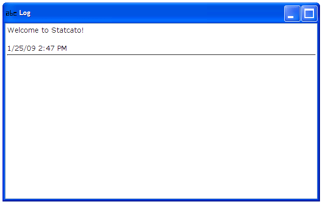

The log window is a window where the output of various commands of the application is displayed. It is an internal window located at the top half of the Statcato main window. The contents of the window is displayed using HTML.
You can type in the log window to enter plain text. You can also perform common edit operations on the log window contents, such as copy (ctrl-c), paste (ctrl-v), and select all (ctrl-a).
To clear the log window, select Clear Log from the File menu.
Select File > Print Log … (ctrl-p). A Print Log Window dialog will appear and provide the following print options: